Képtár
Az ALN honlapja nemcsak a regény történetével foglalkozik, s írásos anyagokat tesz közzé minden
érdeklõdõ számára, hanem az ehhez tartozó különbözõ képekkel, grafikus alkotásokkal is. Ez a rész
teret biztosít minden korai és késõbbi tervrajznak, vázlatnak, szkicsnek, grafikának, számítógépes
képnek, és bárminek, ami kötõdik a mûhöz.
Külön a regényben szereplõ alkotásokkal itt találkozhatsz: Regény, Képek
| Minta |
Rövid leírás |
| 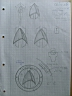 |
Komjelvények, Mennydörgések jelképe |
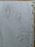 |
Mennydörgés osztag dísz-komjelvénye |
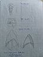 |
Pár komjelvény és logó tervezet |
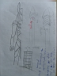 |
Elsõk tervezett kinézete |
 |
Glory hídjának tervezett kinézete |
 |
Glory tervezett hídjának pár részlete |
 |
Glory tervezett hídjának oldalnézete |
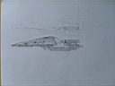 |
Glory legelsõ terve |
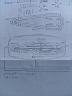 |
Glory pajzsainak elsõ tervkinézete |
 |
Glory elsõ terve befejezve |
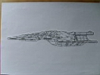 |
Glory második, javított terve #1 |
 |
Glory második, javított terve #2 |
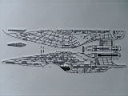 |
Glory második, javított terve #3 |
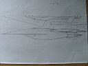 |
Glory új, harmadik vázlata |
 |
Glory új, harmadik vázlatának részletei, hídja |
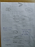 |
Glory új, harmadik vázlatának újabb részletei |
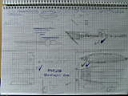 |
Glory új, harmadik vázlatának legrészletesebb belsõ részei |
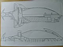 |
Hannibal elsõ tervrajza |
 |
Kapitány készenléti szobájának tervei #1 |
 |
Kapitány készenléti szobájának tervei #2, Izolineáris Chip terve |
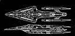 |
Glory tökéletesített vázlata |
 |
Izolineáris Chip tökéletesített rajza |